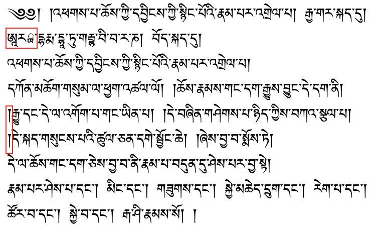
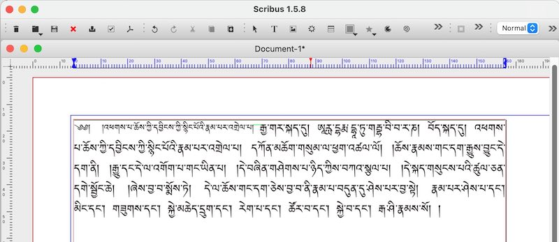
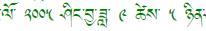
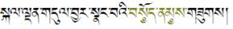
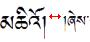

Tibetan formatting rules
Contents
Tibetan formatting rules¶
Introduction¶
Current apps for desktop and mobile handle Tibetan script well, and in most cases it’s simply necessary to use a correct Tibetan font and things will work as expected.
The following describes the formatting process using the example of the following short Tibetan text.1 Pasting the text into some arbitrary editor might end up with something like:

Some problems are marked in red:
there are two
shad། at a beginning of a line, which is forbidden,the Tibetan font wasn’t able to render Ārya (ཨཱརྻ་) correctly. Additionally,
the font size of the header should be smaller
The following chapter shows how to enhance the formatting of our example.

This examples was typeset with Scribus, an excellent open-source type-setting program with good Tibetan support.
Notice:
the headline-part is in smaller font (
yig chung)smaller and larger fonts are aligned at the letter-head (see green line). This usually requires manual correction of the vertical position of either the smaller or larger Tibetan font, since most Tibetan fonts are optimized to mix well with Western text which aligns at the lower letter boundary.
there are no
shad། at the line start.
Basic formatting rules for Tibetan text¶
Line-breaking rules¶
Line breaks must not occur in the middle of a syllable. (Your app should take care of that already).
Line breaks can appear after a syllable separator dot
tsheg་ (preferably but not mandatory: not in the middle of a Tibetan word). Exception: the sequencenga <tsheg> <shad>ང་། Here thetsheg་ is a so-called non-breakingtsheg.Additionally, line breaks are possible after shad ། (but not in the middle of a sequence
། །, here a line break can only occure after the lastshad།), and after terma-signgter ma༔ and avisargaཿ.
Inter-syllable marker tsheg ་¶
There is never a
tsheg་ after avisargaཿ. Example:oṃ āḥ huṃ, Wylie:oM AHhU~M, ཨོཾ་ཨཱཿཧཱུྃ་ — there is notsheg་ afterāḥཨཱཿ.Unicode contains two codes for
tsheg: 0x0F0B, the normal inter-syllable marker, and 0x0F0C a non-breaking variant. Usage of the second variant instructs the application not to line-break at thistsheg. (Similar to the non-breaking space 0xa0 for Western script.)
White spaces¶
Tibetan uses only non-breaking spaces which should not vary in size on left-right justification.
For this reason, justified text requires the application to vary the distance between letters of a syllable.
Note: To insert a non-breaking space, press <Ctrl>-<Shift>-<Space> (this works in LibreOffice or Microsoft Office). Most Tibetan keyboards also support _ (underscore) as a short-cut for non-breaking-space.
Usage of punctuation character shad །¶
A line must not start with a
shad།.A
shad། is used as a Tibetan inter-punctuation, similar but not identical to a comma.Verses, headlines or ends of longer paragraphs are ended by the sequence
<shad> <non-breaking space> <shad>། །. Line breaks must not separate the twoshad། །.Exception: if the last letter of a line is either a
kaཀ or agaག, oneshad། is ommitted. (The vertical stroke of ཀ or ག then serves as an implicitshad།. This avoids difficulties with carving two vertical lines ཀ། in wood-blocks.) This rule also applies, ifkaཀ orgaག have vowel-signs. Ashad། is not omitted if they have a sub- or superscript. Examples:Incorrect: གི།, ཀུ། །,
Correct: གི, ཀུ །, སྐུ།, གྲུ། །.
Rules for replacing shad ། by rin chen spungs shad ༑¶
In Tibetan, especially in pechas, it is considered a special case, if the last syllable of an expression that is terminated by a
shad། breaks to a new line. In that case theshad། or doubleshad shad། ། is replaced byrin chen spungs shad༑ or ༑ ༑. This serves as an optitical indication that there is a left-over syllable at the beginning of the line that actually belongs to the preceding line.a special case would be for example
le'u: in a line starting with ལེའུ། །, norin chen spungs shadwould be used, sincele'uis pronounced as two syllables.Variants: some books-prints do not use
rin chen spungs shadreplacements, however the majority of books seems to apply the same rules as are used with pechas.Sometimes in the sequence ། ། only the first
shadis replaced: ༑ །, but this style is considered less beautiful.Correctly using
rin chen spungs shad༑ in long texts can be very time consuming, because even very small formatting or content changes might moverin chen spungs shad༑ into positions where they are no longer correct. Same is true forshad། that suddenly need to becomerin chen spungs shad༑.
Tip
Check out the LibreOffice tool for rin chen spungs shad ༑ formatting. The tool automatically handles formatting and approriate replacing of ༑ and །.
Numbers and special signs¶
Numbers: Usually the Space character in Tibetan text is quite wide and occurs only after a
shad། or ༑,gter ma༔, orvisargaཿ. Exception are numbers and embedded Western text. Tibetan numbers are separated from left and right Tibetan letters by smaller spaces:
Terma signs: In case a section of text that is actually a
gter ma༔, a single terma symbol ༔ replaces bothshad། and doubleshad། །. Wood-block pechas sometimes simplify thegter ma༔ so that it looks like avisargaཿ, but digital texts should use the proper terma sign ༔ in that case.Honorific marks: An honorific emphasis can be expressed by a special prefix ༧, by colour, or by circles under the syllable as in the following example:
Root text identifier: ༷A simple circle under a Tibetan letter is used in a similar way as underlining is used with Western script, it’s usage is similar to the honorific mark. The simple subjoined circle is often used to identify root-text citations within a commentary: སྐུ༷་གསུ༷ང་ཐུག༷ས།.
Sanskrit Halanta ྄, Tib.
srog med, སྲོག་མེད་, when placed under a Tibetan letter within a transliterated word, it signifies that his letter has no vowel: ཛཔ྄་ is therefore pronounced jap and not japa.Repetition sign ༴,
bsdus rtags, བསྡུས་རྟགས་, is used to indicate within a repeating structure that the text should continue similarly as above, comparable to etc., often used for refrains.
Head letters, yig mgo ༄༅ and sbrul shad ༈¶
The head letter
yig mgo༄༅། ། in pechas always marks the upper left corner of a front-page of a pecha. It serves for quick optical discrimination between front- and back-side of a pecha. This usage does not occur in books. Additionally, in both pechas and books, theyig mgo༄༅། ། is used at the start of headlines, and at the start of the first paragraph of a longer text.The
sbrul shad(snake head) ༈ is used to indicate:the start of a smaller text or prayer,
a chapter boundary
in text or prayer collections, the start of a new text or prayer
in pechas, to mark insertions into a text: a
sbrul shad༈ would mark both beginning and end of the insert.
Small print yig chung¶
Commentaries and annotations in Tibetan books and pechas are printed using an about 25-30% smaller font-size. In pechas, additionally headlines are printed in
yig chungsize. See the Scribus example image above. If normal-size Tibetan andyig chungare mixed, it is important to align the letter-heads of different size characters to the same height. The character super- and sub-script function of the word processor can be used to correctly align the letters. Example:

References:¶
Requirements for Tibetan Text Layout and Typography, W3C First Public Working Draft 16 June 2020.
- 1
Start of a commentary by Nāgārjuna, from Lotsawa House